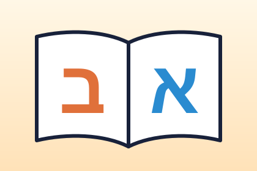

הָאוֹת שׁ
שִׁעוּר קְרִיאָה 1 · חוֹבֶרֶת קְרִיאָה וּכְתִיבָה, עַמּוּדִים 3-6 · שָׁ שַׁ שְׁ
פתיחת השיעור ←הָאוֹת בּ
שִׁעוּר קְרִיאָה 2 · חוֹבֶרֶת קְרִיאָה וּכְתִיבָה, עַמּוּדִים 7-11 · בָּ בַּ בְּ
פתיחת השיעור ←שִׁעוּר אֶחָד לְכָל אוֹת · חוֹבֶרֶת קְרִיאָה וּכְתִיבָה 1

שִׁעוּר קְרִיאָה 1 · חוֹבֶרֶת קְרִיאָה וּכְתִיבָה, עַמּוּדִים 3-6 · שָׁ שַׁ שְׁ
פתיחת השיעור ←שִׁעוּר קְרִיאָה 2 · חוֹבֶרֶת קְרִיאָה וּכְתִיבָה, עַמּוּדִים 7-11 · בָּ בַּ בְּ
פתיחת השיעור ←